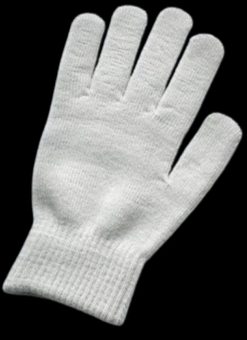

Entry 001
Left Glove, Grey Wool

No tag. Worn thin at the thumb. Held for ninety days per policy, then moved here.
- Condition
- Fair. One small hole, index finger.
- Estimated age
- 2–3 winters
Route 14, Northbound. Items recovered, catalogued, but never claimed.

No tag. Worn thin at the thumb. Held for ninety days per policy, then moved here.
Pages 1 through 40 are fused together and cannot be read. The remaining chapters describe a woman crossing a country by train, though it's unclear if she ever arrives, since the ending is also missing.
Someone had underlined a single sentence on page 118 in blue pen.
Two house keys and one that fits nothing we've been able to identify — too small for a door, too big for a diary. We tried it in every lock in this building. It fit none of them.
Recovered from a phone that was later claimed — everything except this one file, which the owner said wasn't theirs. It's mostly wind, and somewhere underneath it, someone laughing.